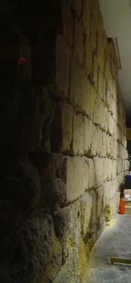
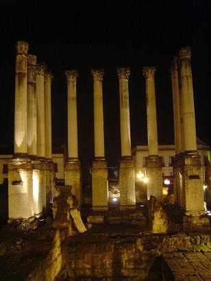
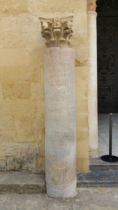
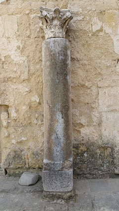
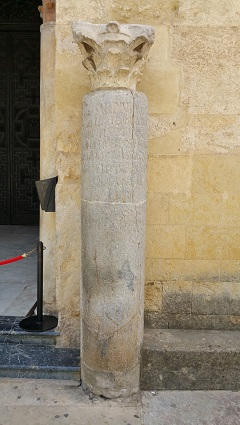

|
De la ciudad republicana conocemos muy poco, pero todo parece indicar que se
planifico siguiendo el sistema urbanístico romano. La nueva ciudad dominaba los
dos vados fluviales existentes. la extensión era de unas 47 ha., con una planta
irregular que se adaptaba perfectamente al terreno para garantizar su defensa. La ciudad se eleva en una meseta frente al meandro del Guadalquivir,
entre el arroyo del Moro y el Guadalmellato.
|
 |
La muralla es la única edificación republicana que conocemos detalladamente.
Desde sus inicios la ciudad se amuralló a lo largo del segundo cuarto del siglo II a.e.c.
El recinto estaba totalmente amurallado. La muralla estaba realizada
con sillares de calcarenita. La anchura era de 2 a 3m y en el interior se
disponía el agger con una anchura de 6m estando el espacio intermedio
relleno de tierra compactada, contenido por otro muro de 0,60 a 1,20m de
anchura. En su lado norte se excavó un foso de 15 m. de anchura mientras que en el lado Este
el Arroyo del Moro actúo como defensa natural. También se ha documentado la
existencia de torres adosadas semicirculares y cuadradas que se fechan a mediados
del siglo I a.e.c. coincidiendo con las guerras civiles.
Un Tramo perteneciente al lienzo de la muralla septentrional integrado en la
sede central de CajaSur. La parte que se observa pertenece al lienzo interno de
la muralla. La cara externa y el posible foso de esta zona se hallan bajo el
actual acerado de la Avda. de Ronda de los Tejares, nº13. |
Corbuba estaba muy bien comunicada con ciudades como: Hispalis, Castulo,
Malaca, Iliberris, Emerita, Epora...
|
 |
En Corduba
persiste una superposición del trazado de las calles romanas sobre las actuales.
Donde mejor se observa es en la zona norte de la ciudad. El eje norte-sur, el Cardo maximus,
puede seguirse hoy día casi en línea recta. El trazado
del Decumanus maximus presenta más problemas de conservación.
Teniendo en cuenta el clima y la gran cantidad de columnas halladas, las calles
principales debieron ser porticadas.
En la calle Maese Luis se conservan los restos de la calzada integrados
en un aparcamiento para residentes.
En la muralla fundacional se abrieron cuatro puertas orientadas de acuerdo
con los puntos cardinales "Puerta de Osario, al
Norte y C/ Blanco Belmonte, al Sur, entre las que discurre el kardo maximus.
Las otras dos se corresponden con la "puerta de Gallegos", al Oeste y la
"puerta de Roma", al Este, el Decumanus maximus.
Se han hallado restos de una torre
semicircular en la Plaza de Colón, 8, con un de diámetro de 7m.
Durante el reinado del emperador Tiberio la ciudad amplía y fija su límite Sur en la línea descrita
por el río Baetis (Guadalquivir).
Se abren también nuevas puertas, como la actualmente denominada de Almodóvar, la
de Sevilla, desde la que se accedía al puerto fluvial, la de la Pescadería en la
esquina suroriental de la ciudad.
Más reformas se han hallado en el centro de culto imperial de la
actual C/ Claudio Marcelo, foro provincial altoimperial y en la zona Norte
en la Plaza de Colón nº 4.
|
En el parking La Mezquita de
Córdoba. Calle Cairuán, 1. En el segundo sótano del aparcamiento público se
conservan los restos de la primitiva muralla romana fechada en la época alto
imperial tras la declaración de Córdoba como colonia patricia. Siglo I. También
se observa parte de la muralla reutilizada en fechas posteriores, en la era
islámica.
Los miliarios del Patio de los
Naranjos. Se conserva en la actualidad cuatro de esos hitos de la Vía Augusta
ubicados en el Patio de los Naranjos de la Mezquita Catedral, uno de época de
Augusto, otro de Tiberio, un tercero de Calígula y el último de Caracalla.
|
 |
 |
 |
En marzo de 2020, el hotel que se va a
construir en la avenida de América, se decide que integre los restos
romanos hallados en el solar hace unos meses.
En septiembre de 2020, en la obras del
supermercado Aldi en la calle Claudio Marcelo, se han hallado restos romanos.
Afloran vestigios de casas, de una cloaca y del decumano y un tres en raya. |